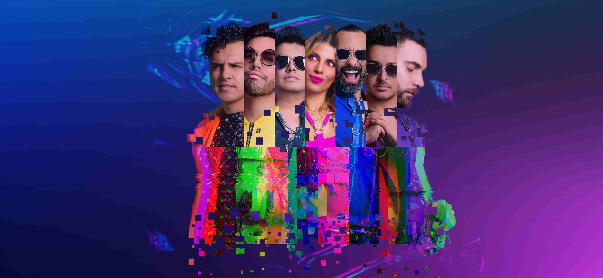
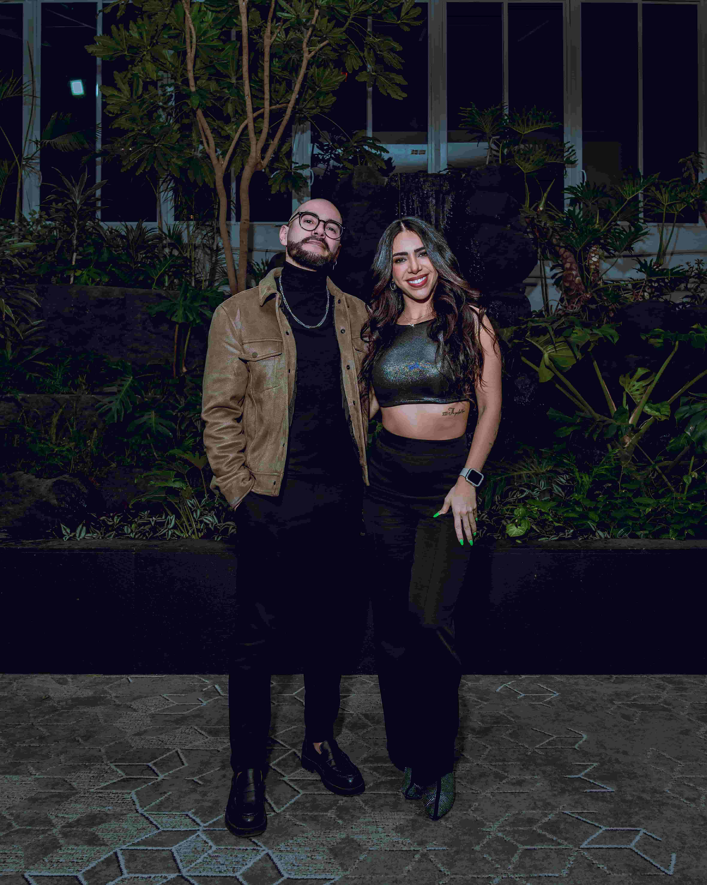

BANDA · CDMX
Trendline
Una experiencia musical en vivo con energía, repertorio versátil y producción profesional.
Ver perfil →ARTISTAS
Explora bandas, DJs, cantantes, comediantes e músicos disponibles para distintos tipos de eventos.
Prueba con otra categoría o limpia los filtros para explorar más talento.

Una experiencia musical en vivo con energía, repertorio versátil y producción profesional.
Ver perfil →Música, concepto y experiencia para convertir cada evento en algo memorable.
Ver perfil →
Dos voces, armonías y un show diseñado para conectar con todo tipo de audiencias.
Ver perfil →Comediante y guionista; humor de observación y experiencia en televisión.
Ficha próximamenteStand-up y humor irreverente; coconductor de La Cotorrisa.
Ficha próximamenteComediante y escritor; integrante fundador de Standopados.
Ficha próximamenteEl As de la Comedia; monólogos y anécdotas cotidianas.
Ficha próximamenteComedia y conducción; información profesional por confirmar.
Ficha próximamenteMonólogos e imitaciones; información profesional por confirmar.
Ficha próximamenteEspectáculo colectivo de stand-up; alineación actual por confirmar.
Ficha próximamenteStand-up y comedia para eventos corporativos.
Ficha próximamenteEl Máster de la Comedia; humor sobre experiencias cotidianas.
Ficha próximamenteComedia familiar y para eventos; identidad por confirmar.
Ficha próximamenteComediante de stand-up, conocido por Sosafado y Maleducado.
Ficha próximamenteStand-up y comedia de observación; especial Frágil.
Ficha próximamente